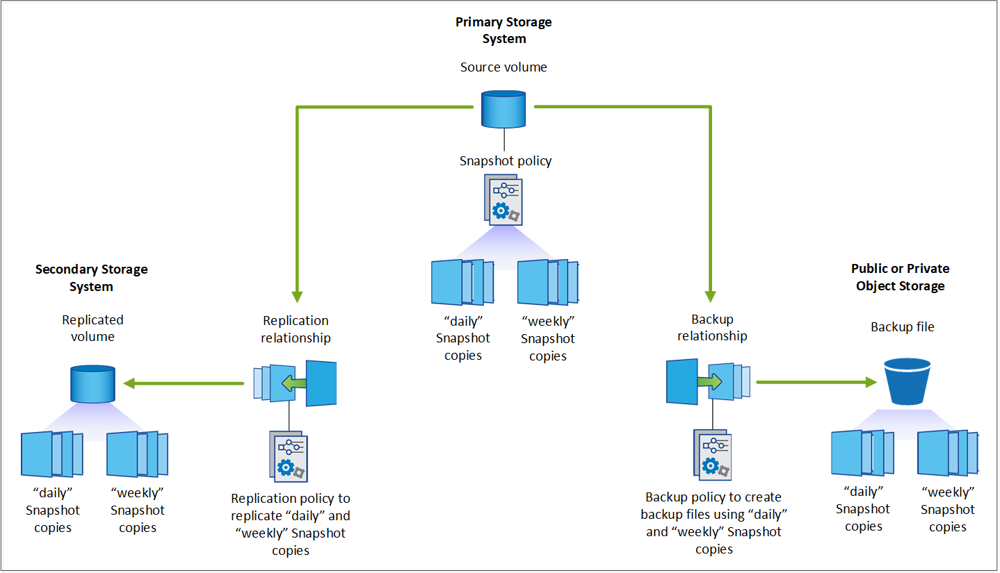

发行说明
发行说明
规划您的保护之旅
 建议更改
建议更改
通过BlueXP备份和恢复服务、您最多可以为源卷创建三个副本来保护数据。在卷上启用此服务时、您可以选择许多选项、因此您应查看所做的选择、以便做好准备。
我们将介绍以下选项：
-
您将使用哪些保护功能：Snapshot副本、复制的卷和/或备份到云
-
您将使用哪种备份架构：卷的级联备份或扇出备份
-
您是使用默认备份策略、还是需要创建自定义策略
-
您希望服务为您创建云分段、还是希望在开始之前创建对象存储容器
-
您使用的BlueXP Connector部署模式是什么(标准、受限或专用模式)
您将使用哪些保护功能
在选择要使用的功能之前、下面简要说明了每个功能的功能及其提供的保护类型。
| 备份类型 | Description |
|---|---|
Snapshot |
在源卷中创建卷的只读时间点映像、并将其作为Snapshot副本。您可以使用Snapshot副本恢复单个文件或还原卷的整个内容。 |
Replication |
在另一个ONTAP存储系统上创建数据的二级副本、并持续更新二级数据。您的数据始终保持最新、并在需要时始终可用。 |
云备份 |
创建数据备份到云中、以实现保护和长期归档目的。如有必要、您可以将备份中的卷、文件夹或单个文件还原到相同或不同的工作环境。 |
快照是所有备份方法的基础、需要使用备份和恢复服务。Snapshot 副本是卷的只读时间点映像。此映像占用的存储空间极少，并且性能开销极低，因为它仅记录自上次创建 Snapshot 副本以来对文件所做的更改。在卷上创建的Snapshot副本用于使复制的卷和备份文件与对源卷所做的更改保持同步、如图所示。

您可以选择在另一个ONTAP存储系统上同时创建复制的卷、并在云中创建备份文件。或者、您也可以选择仅创建复制的卷或备份文件、这是您的选择。
概括地说、以下是您可以为ONTAP工作环境中的卷创建的有效保护流：
-
源卷→ Snapshot副本→复制的卷→备份文件
-
源卷→ Snapshot副本→备份文件
-
源卷→ Snapshot副本→复制的卷

|
在初始创建复制的卷或备份文件时、会包含源数据的完整副本、这称为_baseline传输_。后续传输仅包含源数据(Snapshot)的差异副本。 |
不同备份方法的比较
下表显示了这三种备份方法的总体比较。虽然对象存储空间通常比内部磁盘存储成本更低、但如果您认为可能会频繁地从云中还原数据、则云提供商的出口费用可以减少您的部分节省。您需要确定需要从云中的备份文件恢复数据的频率。
除了此标准之外、如果您使用DataLock和防兰索防备份功能、云存储还提供了其他安全选项、并通过为较早的备份文件选择归档存储类来节省更多成本。 "了解有关DataLock和勒索软件保护的更多信息" 和 "归档存储设置"。
| 备份类型 | 备份速度 | 备份成本 | 恢复速度 | 恢复成本 |
|---|---|---|---|---|
快照 |
高 |
低(磁盘空间) |
高 |
低 |
复制 |
中等 |
介质(磁盘空间) |
中等 |
介质(网络) |
云备份 |
低 |
低(对象空间) |
低 |
高(提供商费用) |
您将使用哪种备份架构
在创建复制的卷和备份文件时、您可以选择扇出或级联架构来备份卷。
扇出*架构将Snapshot副本独立传输到目标存储系统和云中的备份对象。

级联*架构首先将Snapshot副本传输到目标存储系统、然后该系统将副本传输到云中的备份对象。

不同架构选项的比较
下表对扇出架构和级联架构进行了比较。
| 扇出 | 级联 |
|---|---|
对源系统的性能影响很小、因为它会向2个不同的系统发送Snapshot副本 |
对源存储系统性能的影响较小、因为它只发送Snapshot副本一次 |
由于所有策略、网络和ONTAP配置都在源系统上完成、因此设置起来更容易 |
还需要从二级系统完成一些网络连接和ONTAP配置。 |
是否会对Snapshot副本、复制和备份使用默认备份策略
您可以使用NetApp提供的默认策略创建备份、也可以创建自定义策略。使用激活向导为卷启用备份和恢复服务时、您可以从默认策略以及工作环境(Cloud Volumes ONTAP或内部ONTAP系统)中已存在的任何其他策略中进行选择。如果要使用与现有策略不同的策略、可以在启动之前或使用激活向导时创建此策略。
-
默认Snapshot策略会创建每小时、每天和每周Snapshot副本、并保留6个每小时、2个每天和2个每周Snapshot副本。
-
默认复制策略会复制每日和每周Snapshot副本、并保留7个每日Snapshot副本和52个每周Snapshot副本。
-
默认备份策略会复制每日和每周Snapshot副本、并保留7个每日Snapshot副本和52个每周Snapshot副本。
如果您为复制或备份创建自定义策略、则策略标签(例如"每日"或"每周")必须与Snapshot策略中的标签匹配、否则不会创建复制的卷和备份文件。
您可以使用BlueXP备份恢复、系统管理器或ONTAP命令行界面(CLI)创建自定义策略。
"使用System Manager创建Snapshot策略"
"使用ONTAP命令行界面创建Snapshot策略"
"使用System Manager创建复制策略"
"使用ONTAP命令行界面创建复制策略"
"使用System Manager创建备份策略"
"使用ONTAP命令行界面创建备份策略"
*注意：*使用System Manager时，选择*异步*作为复制策略的策略类型，然后选择*异步*和*备份到云*作为备份到对象策略。
您可以在BlueXP备份和恢复UI中创建Snapshot、复制和备份到对象存储策略。请参见一节中的 "正在添加新备份策略" 了解详细信息。
下面列出了几个示例ONTAP命令行界面命令、这些命令可能会在您创建自定义策略时很有用。请注意、您必须使用_admin_ SVM (Storage VM)作为 <vserver_name> 在这些命令中。
| 策略问题描述 | 命令 |
|---|---|
Simple Snapshot策略 |
|
轻松备份到云 |
|
利用DataLock和防反向器保护功能备份到云 |
|
使用归档存储类备份到云 |
|
轻松复制到另一个存储系统 |
|
|
|
只有存储策略才能用于备份到云关系。 |
我的策略位于何处？
根据您计划使用的备份架构、备份策略位于不同的位置：扇出或级联。复制策略和备份策略的设计方式不同、因为对两个ONTAP存储系统进行复制并将备份到对象使用存储提供程序作为目标。
Snapshot策略始终驻留在主存储系统上。
复制策略始终驻留在二级存储系统上。
在源卷所在的系统上创建对象备份策略—这是扇出配置的主集群、而级联配置的二级集群。
下表显示了这些差异。
| 架构 | 快照策略 | 复制策略 | 备份策略 |
|---|---|---|---|
扇出 |
主卷 |
二级 |
主卷 |
级联 |
主卷 |
二级 |
二级 |
因此、如果您计划在使用级联架构时创建自定义策略、则需要在要创建复制卷的二级系统上创建复制和备份到对象策略。如果您计划在使用扇出架构时创建自定义策略、则需要在要创建复制卷的二级系统上创建复制策略、并在主系统上创建备份到对象策略。
如果您使用的是所有ONTAP系统上的默认策略、则一切都已设置完毕。
是否要创建自己的对象存储容器
在工作环境的对象存储中创建备份文件时、默认情况下、备份和恢复服务会在您配置的对象存储帐户中为备份文件创建容器(存储分段或存储帐户)。默认情况下、AWS或GCP存储分段名为<uuid>"。Azure Blb存储帐户名为<uuid> 301"。
如果要使用特定前缀或分配特殊属性、您可以在对象提供程序帐户中自行创建容器。如果要创建自己的容器、必须在启动激活向导之前创建它。此容器必须专用于存储ONTAP卷备份文件、不能用于任何其他用途。备份激活向导将自动发现选定帐户和凭据的已配置容器、以便您可以选择要使用的容器。
您可以从BlueXP或云提供商创建存储分段。
*注意：*在StorageGRID系统中创建备份或备份到ONTAP S3时、目前不能使用自己的S3存储分段。
如果您计划使用与"NetApp-backup-xxxxxx"不同的存储分段前缀、则需要修改连接器IAM角色的S3权限。有关详细信息、请参见有关创建备份到AWS S3的主题。
高级存储分段设置
如果您计划将较早的备份文件移至归档存储、或者计划启用DataLock和勒索软件保护以锁定备份文件并扫描其是否存在可能的勒索软件、则需要使用特定配置设置创建容器：
-
如果在集群上使用ONTAP 9.10.1或更高版本的软件、则AWS S3存储目前支持您自己存储分段上的归档存储。默认情况下、备份从S3 _Standard"存储类开始。确保使用适当的生命周期规则创建存储分段：
-
30天后、将整个分段范围内的对象移动到S3 Standard" iA。
-
将标记为"smm_push tO_archive：true "的对象移动到_Glacier"灵活的Retriiver_(原S3 Glacier）
-
-
如果在集群上使用ONTAP 9.11.1或更高版本的软件、则AWS存储支持DataLock和防抱死软件保护；如果使用ONTAP 9.12.1或更高版本的软件、则Azure存储支持DataLock和防抱死软件保护。
-
对于AWS、您必须在保留期限为30天的存储分段上启用对象锁定。
-
对于Azure、您需要创建具有版本级不可变形支持的存储类。
-
您使用的是哪种BlueXP Connector部署模式
如果您已经在使用BlueXP管理存储、则表示已安装BlueXP Connector。如果您计划将同一个Connector与BlueXP备份和恢复结合使用、则一切都准备就绪。如果您需要使用其他Connector、则需要在开始备份和恢复实施之前安装它。
BlueXP提供了多种部署模式、使您能够以满足业务和安全要求的方式使用BlueXP。_Standard mode"利用BlueXP SaaS层提供完整功能、而_restricted mode"和_private mode"则可供具有连接限制的组织使用。
支持具有完全Internet连接的站点
在具有完全Internet连接(也称为"标准模式"或"SaaS模式")的站点中使用BlueXP备份和恢复时、您可以在由BlueXP管理的任何内部ONTAP或Cloud Volumes ONTAP系统上创建复制的卷、 您可以在任何受支持的云提供商的对象存储上创建备份文件。 "查看受支持备份目标的完整列表"。
有关有效连接器位置的列表、请参见计划在其中创建备份文件的云提供程序的备份主题。必须在Linux计算机上手动安装连接器或将连接器部署在特定云提供商中、这方面存在一些限制。
支持Internet连接有限的站点
BlueXP备份和恢复可在Internet连接受限(也称为"受限模式")的站点中用于备份卷数据。在这种情况下、您需要在受限区域部署BlueXP Connector。
支持无 Internet 连接的站点
在没有Internet连接的站点(也称为"专用模式"或"非公开"站点)中、可以使用BlueXP备份和恢复来备份卷数据。在这种情况下、您需要在同一站点的Linux主机上部署BlueXP Connector。
-
您可以将本地内部ONTAP 系统中的数据备份到本地NetApp StorageGRID 系统。请参见操作说明 "将内部 ONTAP 数据备份到 StorageGRID" 了解详细信息。
-
您可以将本地内部ONTAP系统中的数据备份到本地内部ONTAP系统或为S3对象存储配置的Cloud Volumes ONTAP系统。请参见操作说明 "将内部ONTAP数据备份到ONTAP S3" 了解详细信息。
ifdef：：AWS。